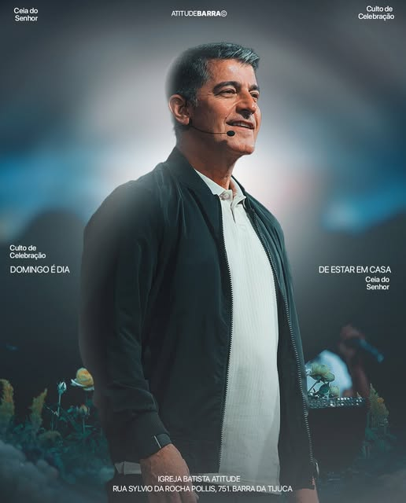
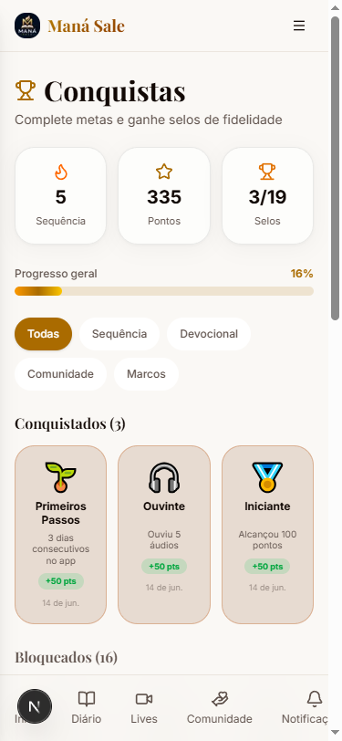
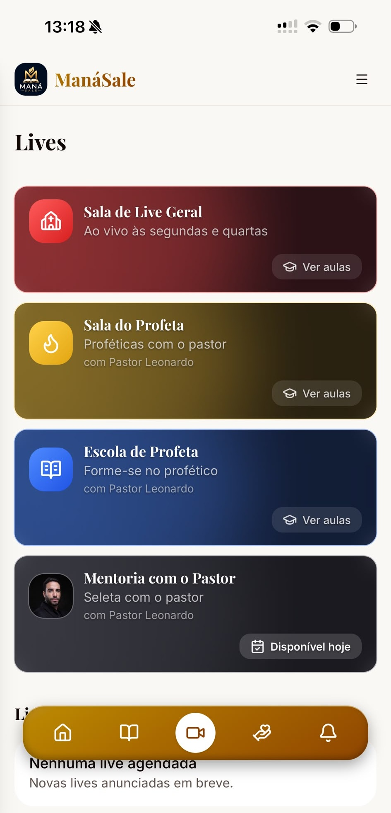
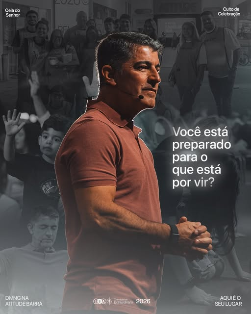

Proposta · Brasil Clips
Um lugar próprio para o devocional, os cultos e a jornada de cada membro da Igreja Batista Atitude.
Para o Pr. Josué Valandro Jr. · Tecnologia desenvolvida por Church Technology
01 · Contexto
831 mil
Pastor
seguidores do Pr. Josué no Instagram
318 mil
Igreja
seguidores da Atitude Sede
15 mil
Conteúdo
posts publicados pela igreja
5
Cultos
por semana na sede
Fonte: perfis @josuevalandrojr e @ibatitude no Instagram, outubro de 2026
02 / 17
01 · Contexto
01
Cada post disputa atenção com todo o resto do feed. Quem segue nem sempre vê.
02
Devocional, leitura, intercessão e cultos vivem em links diferentes.
03
Não dá para saber quem leu o devocional hoje nem quem parou de voltar.
Brasil Clips · Church Technology
03 / 17
02 · A proposta
Brasil Clips · Church Technology
04 / 17
02 · O app
Manhã com Deus em texto e áudio, com aviso toda manhã.
Leitura bíblica com progresso e sequência de dias.
Transmissão com chat e pedidos de oração ao vivo.
Pedidos de oração enviados e acompanhados no app.
Agenda e inscrição em conferências e encontros online.
Sequência, pontos e selos que mantêm o hábito.
Tudo o que a Atitude já oferece hoje, reunido em um só lugar
05 / 17
02 · O app
A palavra chega no horário marcado e fica guardada no diário de cada pessoa.
Palavra do Dia publicada em horário programado
Versículo, reflexão e áudio na mesma tela
Anotação pessoal sobre o que a palavra marcou
Favoritos e calendário para voltar a qualquer dia
06 / 17

02 · O app
Cada dia com a palavra conta. O app mostra o caminho percorrido e convida a continuar.
Sequência de dias seguidos no app
Pontos por ler, ouvir e participar
Selos para cada marco alcançado
Categorias: sequência, devocional, comunidade e marcos
Tela real da tecnologia em produção
07 / 17

02 · O app
O pastor entra ao vivo e a igreja assiste, conversa e ora no mesmo lugar, pelo celular.
Salas por tipo de encontro
Chat em tempo real
Contador de orações ao vivo
Aviso no celular quando a live começa
Tela real do app em produção. Na Atitude, as salas levam os nomes e as cores da igreja.
08 / 17

02 · O app
O Pr. Josué já fala com 831 mil pessoas no Instagram. No app, essa palavra chega direto, sem depender do alcance de cada post.
Devocional narrado na voz dele
Aviso no celular com a palavra do dia
Versículos explicados, no tom da igreja
09 / 17
02 · O app
A Jornada dos Sonhos, de 12 semanas, pode virar uma trilha dentro do app: um passo por semana, progresso visível e conquistas ao concluir.
12
semanas, um passo de cada vez
Progresso
cada membro vê onde está
Selos
conquistas ao concluir cada etapa
O mesmo vale para o tema do ano, planos de leitura e séries de mensagens
10 / 17
03 · Tecnologia
Devocionais agendados com data e hora, publicados sozinhos.
Abrir a sala, acompanhar o chat e os pedidos de oração.
Quem entrou, quando entrou e por qual canal chegou.
Notificação no celular de todos, na hora que a igreja quiser.
Acesso ao painel protegido com verificação em duas etapas
11 / 17
03 · Tecnologia
INSTALAÇÃO
No iPhone e no Android, sem passar por loja de aplicativos.
PUSH
Notificação na hora da palavra do dia e de cada live.
TEMPO REAL
Vídeo, chat e orações acontecendo dentro do app.
TELAS
Celular, tablet e computador com a mesma conta.
IDENTIDADE
Marca, cores e nome da Atitude, com tema personalizado de acordo com a identidade da igreja.
PWA
PWA já validado e testado por mais de 4.000 pessoas no app Maná Sale.
Tecnologia desenvolvida por Church Technology
12 / 17
03 · Construção
01
Conteúdo, ministérios e o que entra na primeira versão.
[__ semanas]
02
Design do app com a marca e as cores da Atitude.
[__ semanas]
03
Desenvolvimento e teste com um grupo da igreja.
[__ semanas]
04
História, aquecimento, 72 horas e revelação online.
[__ semanas]
Brasil Clips · Church Technology
13 / 17
04 · Lançamento
Um pastor move a audiência por quem ele é. Quando o Pr. Josué fala, passa credibilidade. O lançamento é ele contando por que isso existe.
01
De onde vem a palavra dele e o que já foi construído.
02
Por que a Atitude precisa de um lugar próprio agora.
03
O que muda na vida de quem entra no primeiro dia.
Brasil Clips · Church Technology
14 / 17
04 · Lançamento
Idade, cidade, membro da igreja ou seguidor de longe.
Temas e formatos que mais geram resposta nos dois perfis.
Dias e horários de pico, que definem a data e a hora do lançamento.
Públicos dos anúncios no Instagram, a partir de quem já responde.
Base: dados do Instagram de @josuevalandrojr e @ibatitude, com acesso liberado pela igreja
15 / 17
04 · Lançamento
72h
Começa forte. Algo grande está chegando, sem revelar o que é.
48h
O pastor conta de onde vem essa ideia e por que agora.
24h
Contagem regressiva, lembretes e anúncios no pico.
Dia D
O pastor revela em uma live e o app abre na mesma hora.
Antes das 72h: aquecimento da audiência
A janela toda: anúncios no Instagram
Data e horário: definidos com o pastor, no momento certo
16 / 17
Próximo passo
Brasil Clips
Tecnologia desenvolvida por Church Technology
17 / 17